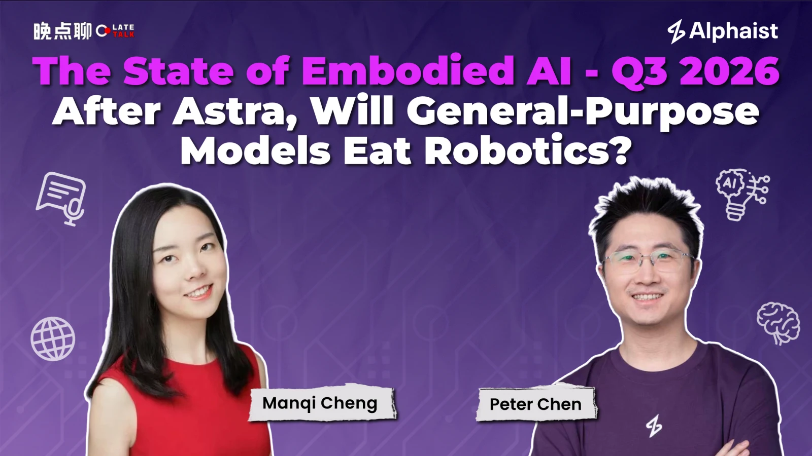
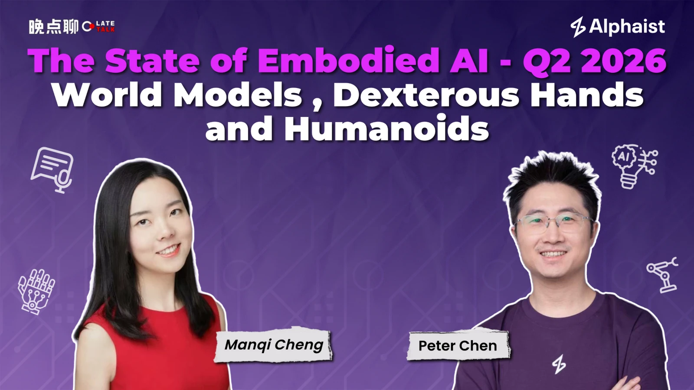
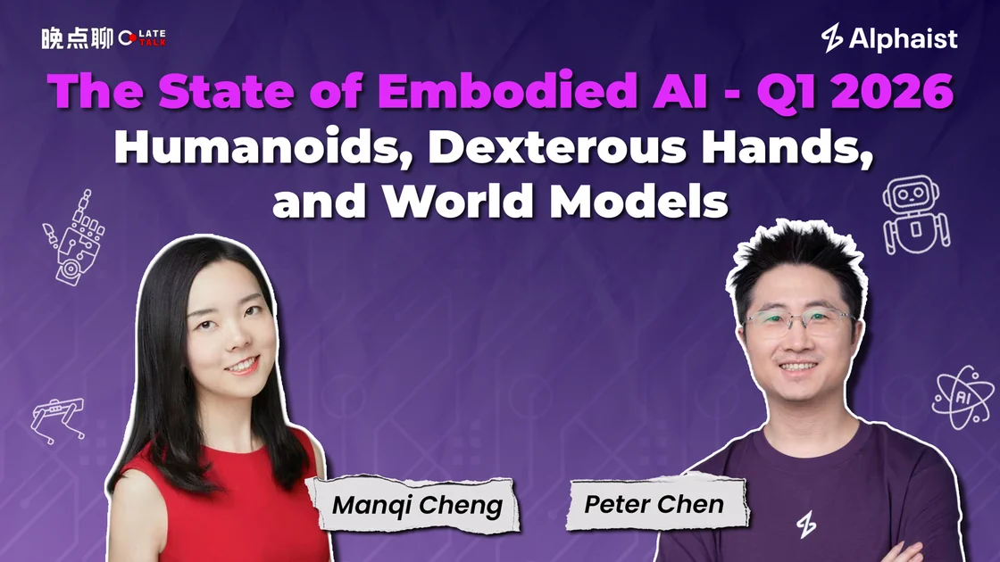
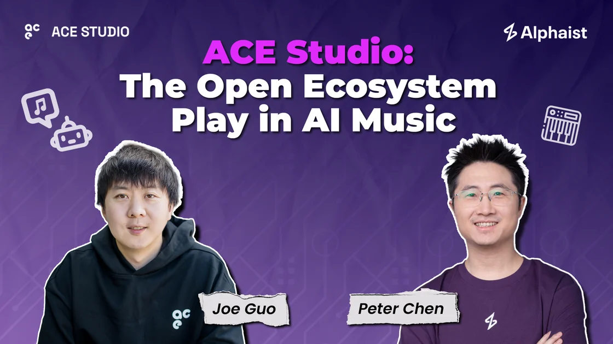

Zero to Alpha · Documentary
Direct Drive Faith
Inside the workshop of Yunzhe Pan, a robotics founder we back.
Zero to Alpha · Documentary
Inside the workshop of Yunzhe Pan, a robotics founder we back.

The State of Embodied AI, Q3 2026After Astra, Will General-Purpose Models Eat Robotics?Manqi Cheng & Peter Chen · 60 minListen on Spotify
The State of Embodied AI, Q2 2026World Models, Dexterous Hands, and Humanoids at Work
The state of embodied AI, Q1 2026: humanoids, dexterous hands and world modelsA quarterly conversation with LateTalk on hardware, manipulation, and robot intelligence.
ACE Studio: the open-ecosystem play in AI musicBuilding tools for musicians and an open ecosystem for AI music.English editions are translated and AI-voiced with participants’ consent. Listen to the original Chinese edition